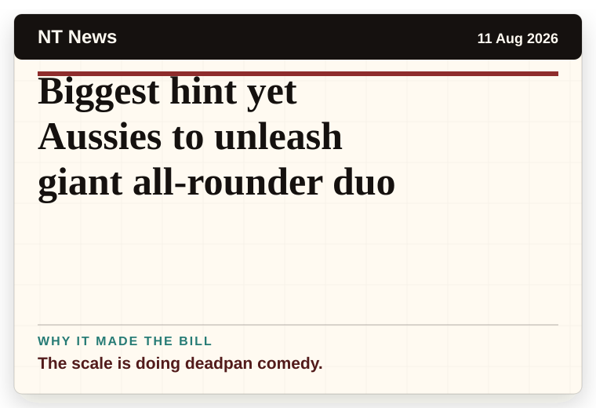
NT News
Australia
Biggest hint yet Aussies to unleash giant all-rounder duo
The scale is doing deadpan comedy.
The latest daily picks, linked back to the original sources. Search the room, pick a source, or follow a headline out to the full story.
Record updated: 13 Aug 2026, 07:50 AM AEST
Showing 22 headline candidates from the refresh run completed on 13 Aug 2026, 07:50 AM AEST.

The scale is doing deadpan comedy.
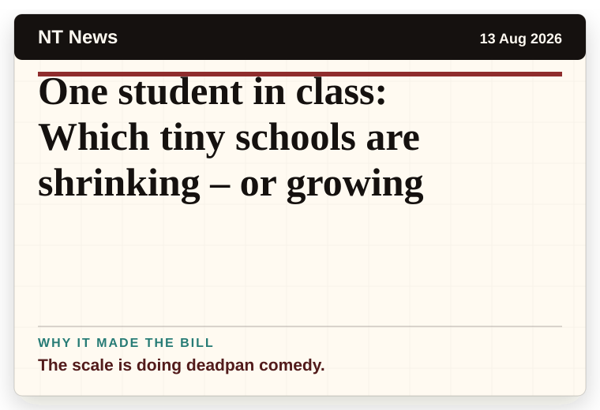
The scale is doing deadpan comedy.
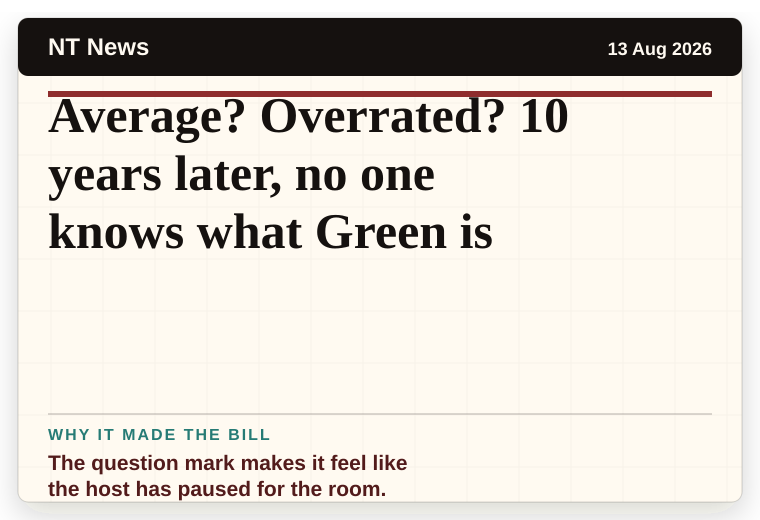
The question mark makes it feel like the host has paused for the room.
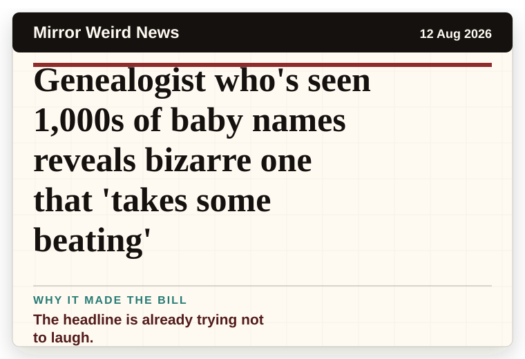
The headline is already trying not to laugh.
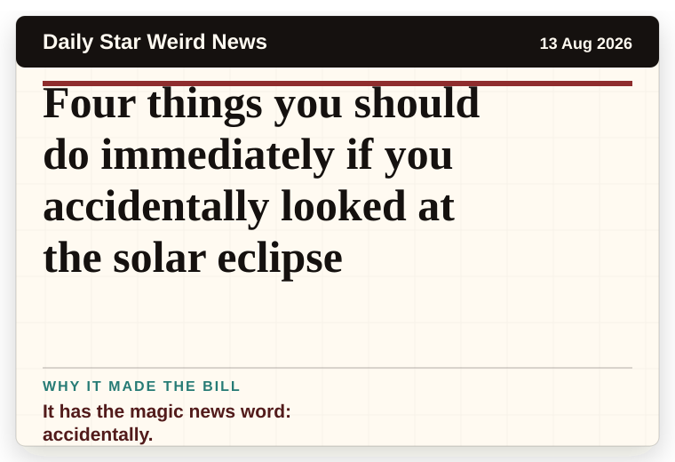
It has the magic news word: accidentally.

The headline is already trying not to laugh.
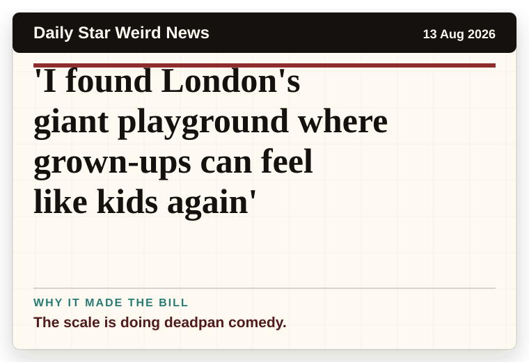
The scale is doing deadpan comedy.

A wonderfully specific detail has taken centre stage.
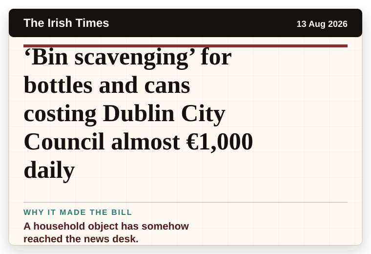
A household object has somehow reached the news desk.

A very ordinary object has wandered into serious news.
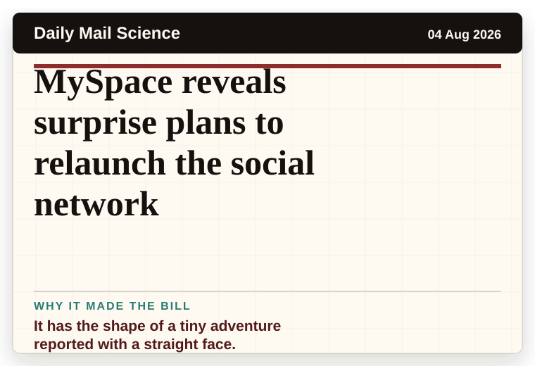
It has the shape of a tiny adventure reported with a straight face.

The question mark makes it feel like the host has paused for the room.
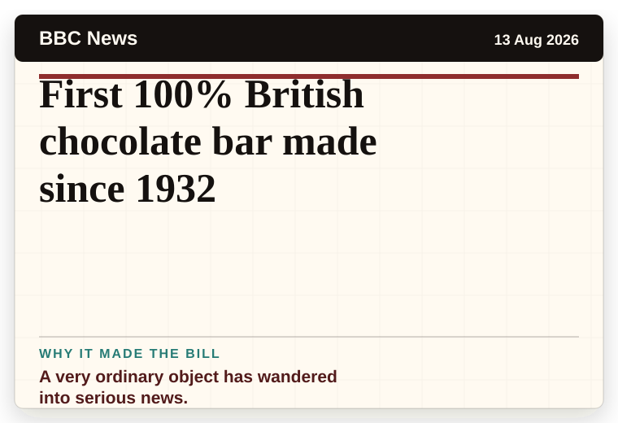
A very ordinary object has wandered into serious news.
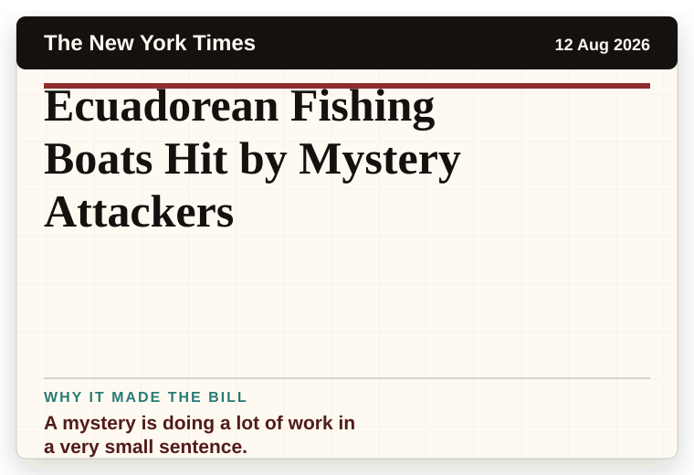
A mystery is doing a lot of work in a very small sentence.
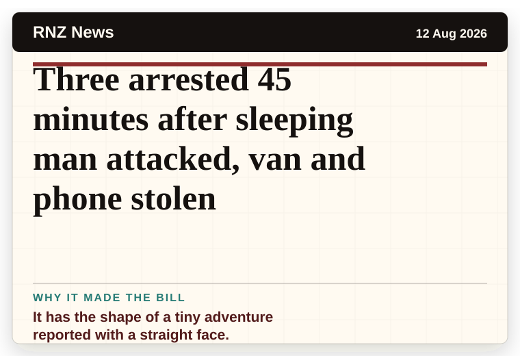
It has the shape of a tiny adventure reported with a straight face.
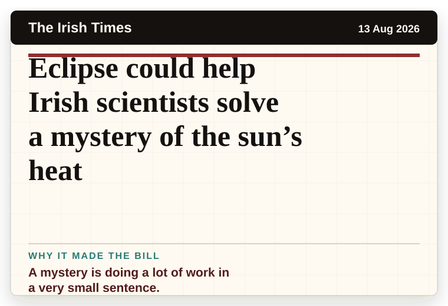
A mystery is doing a lot of work in a very small sentence.
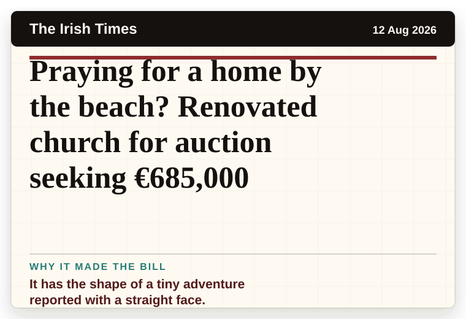
It has the shape of a tiny adventure reported with a straight face.
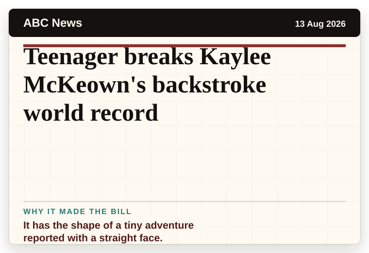
It has the shape of a tiny adventure reported with a straight face.
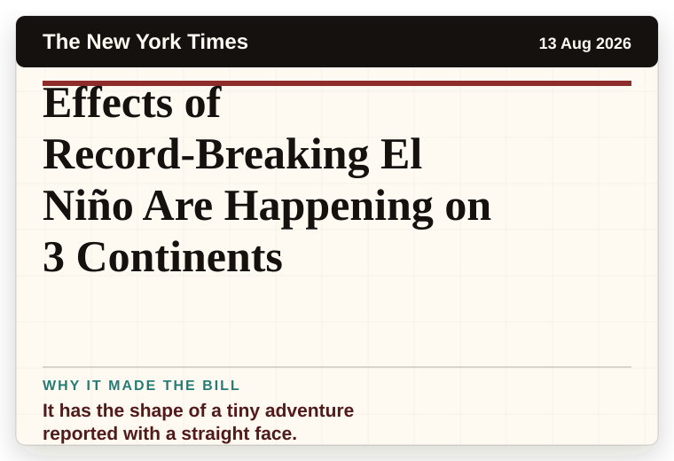
It has the shape of a tiny adventure reported with a straight face.
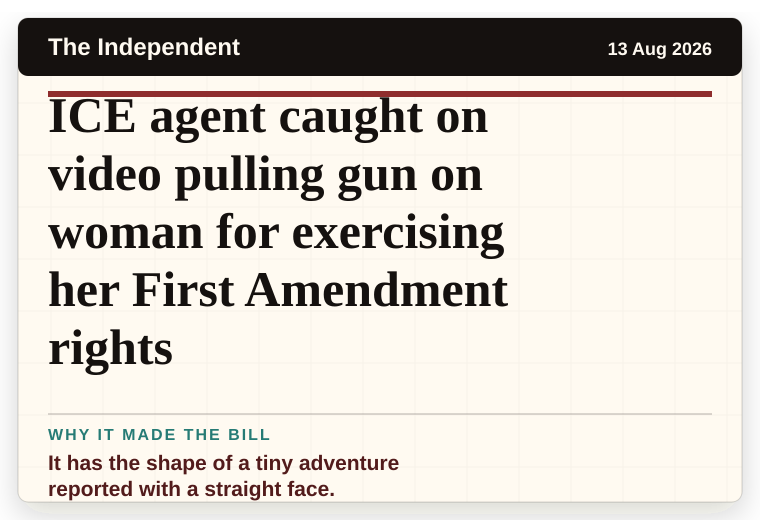
It has the shape of a tiny adventure reported with a straight face.
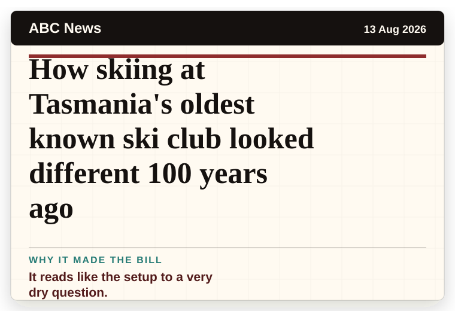
It reads like the setup to a very dry question.
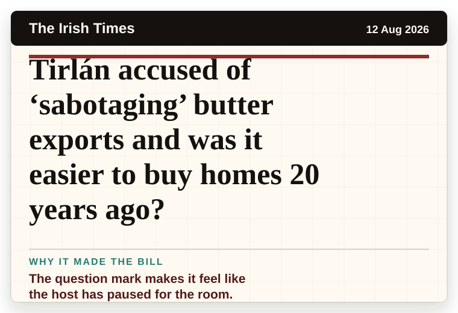
The question mark makes it feel like the host has paused for the room.